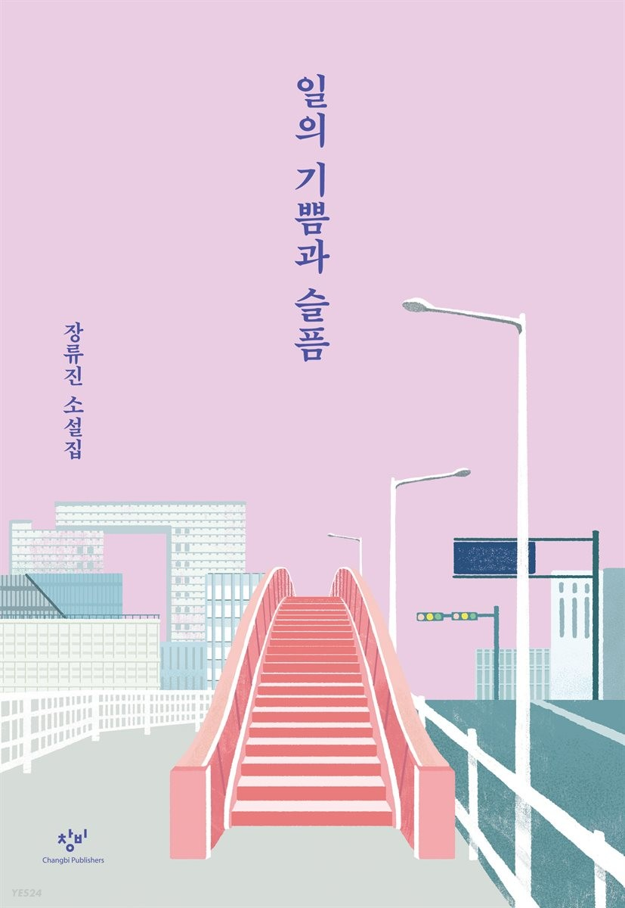

- 새벽의 방문자들
- 잘 살겠습니다
- 일의 기쁨과 슬픔
2018년 창비신인소설상으로 등단한 장류진 작가의 첫 소설

2018년 창비신인소설상으로 등단한 이후 단숨에 수많은 독자와 문단의 관심을 한몸에 받으며
센세이션을 일으킨 장류진 작가의 첫번째 소설집 『일의 기쁨과 슬픔』이 출간되었다.
장류진의 등단작 「일의 기쁨과 슬픔」은 ‘창작과비평’ 웹사이트에 공개된 직후 SNS를 통해 입소문이 급격히 퍼지면서
해당 서버가 다운될 정도로 접속자가 많았고 누적 조회수가 40만건에 이를 정도로 폭발적인 호응을 얻었다.
이후로도 발표하는 작품마다 탁월한 재미와 개성을 선사하며 숨가쁘게 이어진 작가의 행보는 등단한 지 꼭 1년 만에
소설집을 출간하는 보기 드문 결실로 이어지게 되었다.